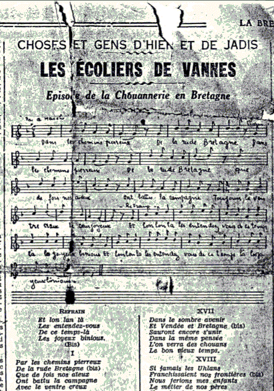
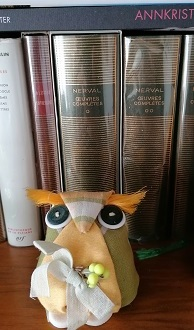
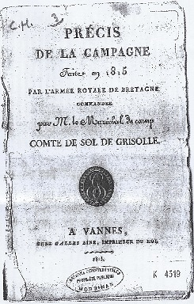
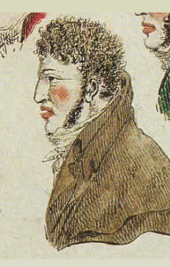
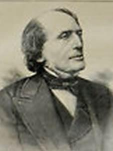

Skolaerion Gwened (Emgann Muzilhak)
Les Ecoliers de Vannes (La bataille de Muzillac)
Schoolchildren of Vannes (The battle of Muzillac)
Composé par Th. de La Villemarqué
Publié par l'Abbé Cadic dans "La Paroisse Bretonne" en mars 1919.
Mélodie
"Les écolier de Vannes"
Noté par Monique Perquis,
Arrangement Christian Souchon (c) 2021
|
A propos de la mélodie Dans les 3 ouvrages cités ci-dessous, il est indiqué "Ar ton : Chetu me erru, me mignon" que l'abbé Cadic n'a pas su identifier. A titre d'illustration on donne ici la mélodie qui accompagne un chant en français composé de strophes de 6 vers de 6 pieds avec refrain de 4 vers de 4 et 5 pieds alternés. Il porte la référence de "chant populaire sur imprimé" C-02720 dans la classification Dastum et s'intitule "Les écoliers de Vannes". Il est reproduit sur deux coupures de presse repérées F-02204. A propos du texte Ce chant est repéré dans la clasification de Patrick Malrieu sous le N° M-00031. Il n'en existe qu'une seule version issue de l'ouvrage d'A-F Rio visé à la note [3] et reproduit par l'Abbé Cadic dans la "Paroisse bretonne de Paris" (mars 1919) et dans "Chants de Chouans" (1949, p. 246-254.) |
 |
About the tune In the 3 works cited below, it is indicated "Ar ton: Chetu me erru, me mignon" (to the tune: "Here I am, my friend") that Father Cadic could not identify. By way of illustration we give the melody which accompanies a song in French language made up of stanzas of 6 verses of 6 feet with a chorus of four 4 and 5 feet alternating verses. It has the broadside reference C-02720 in the Dastum classification and is titled "The schoolchildren of Vannes". It is printed on two press clippings referenced F-02204. About the lyrics This song is found in Patrick Malrieu's classification under the number M-00031. There is only one version, occurring in AF Rio's work, referred to in note [3] and reproduced by Abbé Cadic in his "Paroisse bretonne de Paris" (March 1919) and in "Chants de Chouans "(1949, p. 246-254.). |
|
GWENEDEG SKOLERION GUENNED [1] 1. Cheleuet ol, O Bretoned Ur gañnen nué zo saùet Saùet ar skolerion Guenned Hag e zo oeit te Chouanned. 2. Er laboused glas e laré: "Neijamb en noz klous Frank e vo en néan bermann Rak marù é pel-zo er gohann." [2] 3. "Més er gohann dé ket marù hoah. Kousket e er gohann hinoah: Né ket marù hoah, koh éned. Tostait dohti hag e huelet. 4. Kousket e é kreiz en nerùen Digor-ker é lagad mélen E beg luem, ruiet get hou koed Hou plu gethi édan e zreid. 5. Er hornbout a pé e gleuo Ar é askel hi e saùo E hohannigeu e halùo Hag arnoh geté e sailho. 6. Ridet, laboused glas, ridet! Er gohann e zou dihunet, Dihunet e er gohann goh. Get é fichoned ta arnoh. " 7. Pautr En Tiek e gané gé, [3] Tréma Muzilhak a pe zé; "Santez Anna, mam beniget, Reit-hui konfort d'er Vretoned. 8. Mam er Huerhiez, O dous Intron, Reit-hui d'omb-ni nerh ha kalon, Hiniù en dé ma houniemb Ar en dud a ra beh arnemb. 9. Héliam, pautred, henteu hon sent Mercheu hou goed ziskoei en hent. Ar en dachen ni hounio, Pé el hon tadeu ni varùo." 10. En deu Nikolaz ha Kandal, Rieu [4], Kellek ha tri hant al. Reskondé dehon en un taul: "El hon tadeu e varùomb ol!". 11. A pe oent deit te n'em grogein, Tiek ganné hoah a boéz-pen: "Pe ven téhet kreiz er brézel Mé a ganné hoah kent merùel." 12. Pautr Allieu a ouillé ken Ha chaché doh èvlèu mélen:. "Perak é ouilez, men bugel?" Oulenné 'n eutru Margadel. 13. "Alas! eutru ne oueit ket, Tiek, me mignon zo lahet. . Kellet en-dés bet é vuhé. Er berder Nikolaz eué." 14. "Tauet, me mab, ne ouilet ket, Rak d'er baradoez é mant oeit, Aveit pédein en eutru Doué Ha houniemb hiniù en dé." 15. Oé ket é gomz perachiùet A pe oé Gamber arriùet, Hag er ré glas en-dés pilet Ha ridet kuit hou-dés bet groeit. 16. O doar Breih, O doar beniget, Ha pugale e zo goased, Hou hinour, mam-bro, ha hinour E bado ker pel el er mor. [5] [6] Kempennet gant Ao Kadig |
FRANCAIS LES ECOLIERS DE VANNES [1] 1. Ecoutez, Bretons, à présent: C'est un chant nouveau que j'entame: Le chant des écoliers de Vannes Dont le destin fit des Chouans. 2. Certains oiseaux bleus proclamaient: "La nuit, le jour, plus rien n'entrave Notre vol au ciel. Car tous savent Que la chouette est morte à jamais." [2] 3. Oui, mais la chouette est toujours là Et cette nuit, bien qu'endormie, Vilains oiseaux, elle est en vie. Surtout, ne la réveillez pas! 4. Son oeil jaune est ouvert tout grand, Quand elle dort au creux d'un chêne. Tenant dans ses serres vos pennes, Son bec rougi de votre sang. 5. Quand sonnera le kornebout: La chouette agitera ses ailes Ses petites chouettes et elle En choeur se jetteront sur vous. 6. Fuyez donc, fuyez, bleus oiseaux, Car la chouette s'est réveillée! C'est de ses petits entourée Qu'elle vient sur vous à nouveau." 7. Le Tiec, le jeune garçon [3] A Muzillac, ce chant aux lèvres, Entrait: "Sainte Anne, que la fièvre Du combat gagne les Bretons! 8. Afin que sur nos oppresseurs Nous remportions la victoire, Sainte Anne, auréolée de gloire, Donnez-nous la force et le coeur! 9. Avec le sang versé par eux Nos saints montrent la route à suivre. Nous voulons, ou ne point survivre Ou vaincre, comme nos aîeux! " 10. Candal et les deux Nicolas, Rio [4], Quellec et trois cents autres Revendiquent d'une voix forte, Comme leurs pères, le trépas! 11. Quand du combat vint le moment, Le Tiec chantait à tue-tête: "Si je meurs en pleine tempête, Je veux que ce soit en chantant." 12. Puis Allio se met à pleurer. Il arrache ses boucles blondes: "Pourquoi pleures-tu donc?" le gronde Monsieur de Margadel, inquiet. 13. "Monsieur, ne le savez-vous pas? Mon ami Le Tiec expire; Il est mort et il faut en dire Autant des frères Nicolas!" 14. "Allons, ne pleure pas, mon fils, C'est au paradis qu'ils allèrent Présenter à Dieu leurs prières Pour que nous vainquions aujourd'hui." 15. Il parlait toujours quand survient Gamber. C'est la fin de l'histoire: Il a remporté la victoire Sur les Bleus qui s'enfuient au loin. 16. Comme tes hommes, tes enfants O Bretagne, terre bénie, Sont ton honneur, mère patrie: Eternel, comme l'océan! [5] [6] Traduction Christian Souchon (c) 2021 |
ENGLISH THE SCHOOL CHILDREN OF VANNES [1] 1. Listen all, listen all, Bretons! About the schoolchildren of Vannes Who became Chouans and took to arms It's a newly composed song. 2. The blue-feathered birds once said: "Whether night, or day, let us fly Let's fly free about in the sky Since the old owl has long been dead. " [2] 3. The owl is not dead, believe me! Tonight he is only asleep. The old look-out atop the keep. Come near, bad birds, and you will see! 4. In this hollow oak tree just peek! Its yellow eye is wide open, Your feathers adorn its talon, Red with your blood is its sharp beak. 5. As soon it hears the war horn's moo, Off it flies, the bird on the wing, With its little owls in a ring And, all of them, they'll pounce on you! 6. Fly away, fly away, blue birds, Beware! The owl has woken up! A wolf surrounded with its cubs To pounce upon your flocks and herds!" 7. Le Tiec, the young lad, enters [3] Muzillac, and he croons a song, "Saint Anne, blessed mother, make us strong! Encourage my Breton brothers! 8. Though our feats are far from flawless, Give us strength and heart that we may, So help us God, carry the day, And not the men who torment us, 9. Let us follow in the footsteps Of the saints whose bloody traces Show us the way forward. Let us Do or die. They did. We come next! " 10. The two Nicholas and Candal Rio [4], Quellec, many hundred Others answer him, unnumbered: "Like our elders we will die all!" 11. Time to fight had come. Le Tiec Was still a-singing loudly: "I shall not overcome, maybe, But my song only death shall break. " 12. Young Allio he did cry and yell. He pulled off tufts of his blonde hair: "Lad, what is the cause of your tears Asked Monsieur de Margadel. 13. "Sir, it's the worst of disasters! Our friend Le Tiec was killed; He died - his promise is fulfilled - As did the Nicolas brothers! " 14. "Come on, come on, don't cry, my son, To paradise all of them went Their prayers to God to present That we may say: "This fight we won!". " 15. He had barely finished speaking When Gamm-berr came with a good news: The victory is ours.The Blues Away for their lives are fleeing. 16. Your grown up men and your children, My blessed homeland, Brittany, Are your honour. Eternally Shall it last, like the ocean! [5] [6] Translated by Christian Souchon (c) 2021 |
NOTES:
|
[1] La bataille de Muzillac, ou bataille de Pen-Mur, en date du 10 juin 1815, est un épisode de la "Petite Chouannerie" , un soulèvement breton qui eut lieu pendant les Cents jours (20 mars- 22 juin 1815). Après être entrée à Redon le 4 juin, l'armée royale des Chouans du Morbihan se porte sur Muzillac le 9 juin 1815 , pour attendre un débarquement d'armes par les Britanniques. Alerté, le général Rousseau de l'armée impériale quitte Vannes, pendant la nuit et va à la rencontre des chouans avec 500 fantassins, 70 gendarmes à cheval et un canon. Les Chouans sont bien supérieurs en nombre. Il y a là la légion d'Auray sous les ordres de Joseph Cadoudal et de Jean Rohu, et celle de Vannes, commandée par le chevalier de Margadel et renforcée par la compagnie des Ecoliers du collège Saint-Yves. Les impériaux lancent l'attaque à l'aube, Il s'ensuit une fusillade de près de quatre heures. Devant l'écrasante supériorité en nombre de leurs adversaires les impériaux battent en retraite. Deux jours plus tard, le débarquement a lieu dans la crique de Foleu, à 25 kilomètres en amont de l'embouchure de la Vilaine. Les Chouans reçoivent des Anglais 3 000 fusils, des munitions et deux pièces d'artillerie. Ils regagnent ensuite Rochefort-en-Terre. Le combat fit 5 à 30 morts du côté des Impériaux et, selon le général de Sol de Grisolle, 13 morts et 25 blessés parmi les Chouans. Les mémoires du chef Chouan Julien Guillemot font état de 3 tués parmi les Chouans, comme la gwerz de La Villemarqué, mais ce ne sont pas les mêmes: le séminariste Nicolas, capitaine de la compagnie des Ecoliers, le sergent Le Tiec, et M. de Guerry, officier de l'état-major. [2] La chouette: Le choix de cet oiseau par La Villemarqué évoque, bien entendu la Chouannerie royaliste; Elle dormait au creux d'un chêne et s'éveille soudain, avec ses petits, symbolisant les écoliers de Vannes pour se jeter sur les oiseaux bleus représentant l'armée de la Révolution. [3] Le Tiec "de Guiscriff, était un chansonnier, amoureux de la danse qui, avec la guerre a senti s'éveiller en lui l'âme d'un Tyrtée." L'abbé Cadic, tout comme sans doute La Villemarqué, l'auteur de cette gwerz, tire ses informatios de "La petite Chouannerie" ou "Histoire d'un collège breton sous l'Empire" d'Alexis-François Rio, cité à la strophe 10. Cet ouvrage fut publié à Londres en 1842. Tout ou partie de plusieurs chapitres consistent en des poésies de divers auteurs: "The Breton mother" de Caroline Norton, p. 163; "Les Chouans à Sainte-Anne d'Auray" de Turquety, p. 210, "Le reliquaire" , une élégie de Jules de Francheville, p. 285, "Cities but rarely are the haunts of men" de Walter Savage Landor, p. 294, "Emgann Muzillak", la présente gwerz, p. 300 (attribuée à La Villemarqué, p.283); "Les écoliers de Vannes" de Brizeux, p. 387 (nom cité p. 157), "For honest men of every blood and creed" de R.M Milnes, p.396. C'est de cet ouvrage que sont tirés les informations fournies par l'abbé Cadic concernant les frères Nicolas de Pluméliau, les deux autres victimes royalistes, ainsi que Rio lui-même, de l'île d'Arz, qui fut également l'auteur de l'"Art Chrétien", le prêtre Quellec, le jeune Candal de Plouhinec... L'abbé Cadic insiste sur le caractère exceptionnel d'Allio, de Lavaudan, un caporal dont la bravoure fit forte impression sur ses camarade. Devenu prêtre, "on raconte qu'au lendemain de la révolution de 1830, en voyant apparaître au clocher de son église le drapeau [tricolore] qu'il avait combattu à la place de celui qu'il avait aimé, il dérouilla son fusil de Chouan, le mit sur le lit où il agonisait et trépassa, une main sur lui, l'autre sur son crucifix." [4] A propos d'Alexis-François Rio (1797-1874), voici la fiche que publie le site Babelio.com: Alexis-François Rio est un écrivain, historien de lart, diplomate et enseignant. Il est issu dune famille de lîle dArz qui a été mêlée de près à la chouannerie. En 1804, il rejoint sa mère sur lîle. Élève au collège de Vannes en 1811, il y fait la connaissance dAuguste Brizeux. Sa participation à la "petite chouannerie" en 1815, lors des Cent-Jours, à la tête dun régiment de collégiens de Vannes lui vaut la légion dhonneur en 1816. Agrégé dhistoire en 1819, il enseigne au collège Louis-le-Grand. Mis en congé en 1828, il devient secrétaire dambassade au ministère des affaires étrangères. Après la révolution de juillet 1830, il refuse de prêter serment et quitte lenseignement. Il voyage en Italie avec Lamennais et Montalembert dont il a été le professeur, et en Allemagne. Au mois daoût 1832 à Munich, il sert dinterprète entre Lamennais et Schelling. En 1833, il arrive au Pays de Galles pour y apprendre la langue et s'y établit à la suite de son mariage, en février 1834, avec Miss Appolonia Jones. [Le site omet ici de signaler qu'il avait fait la connaissance en 1832 de l'épouse galloise du diplomate prussien, le baron Bunsen. La mère de celle-ci le mit en relation, outre la famille Jones, avec un clergyman gallois féru de traditions nationales, Thomas Price, récompensé en 1824 par l'Eisteddfod de Welshpool pour un essai sur les relations de son pays avec l'Armorique, et ami du grammairien breton Le Gonidec. Rio avait été invité à présider la fête du 3ème anniversaire de la société galloise d'Abergavenny en novembre 1836, mais il en fut empêché au dernier moment. C'est pourquoi le Rev. Price voulut donner un éclat particulier à l'Eisteddfod d'octobre 1838 qui devait se tenir précisément à Abergavenny. Il eut l'idée d'inviter les notabilités bretonnes les plus versées dans l'étude des choses celtiques: un certain Hersart de la Villemarqué s'empressa de répondre à cette invitation et l'on sait le rôle décisif que joua cet intermède gallois dans la carrière du père du Barzhaz Breizh. Le poète Brizeux ne put se joindre à la délégation bretonne. Rio prononça un discours vibrant qui s'achevait par ces mots salués par des applaudissements frénétiques: "Non, non, le roi Arthur n'est pas mort".] Rio sintéresse à la peinture et en 1836 engage la publication de lArt chrétien qui se poursuivra en quatre volumes jusquà 1867 et qui déclenchera lintérêt de Charles de Gaulle [l'oncle du Général] pour la Bretagne. Sa bibliographie comprend entre autres les ouvrages suivants: "Essai sur l'"Histoire de l'esprit humain dans l'antiquité" (1828), qui lui vaudra un poste de secrétaire au ministère des Affaires étrangères; "Michel-Ange et Raphaël" avec un supplément sur la "Décadence de l'École Romaine"; "De l'art chrétien" (en 4 volumes, à partir de 1835): l'ouvrage reçut un accueil enthousiaste en Allemagne et en Italie, mais fut complètement ignoré en France ; "Epilogue à l'Art chrétien" (1872, 2 tomes); une étude sur "Shakespeare" (1864, où il tente de démontrer que le grand dramaturge était catholique); "L'idéal antique et l'idéal chrétien" (1873). Sans oublier, bien entendu, en 1842, son "Histoire d'un collège Breton sous l'Empire, la petite chouannerie" dont nous parlons amplement par ailleurs. [5] Le dialecte "dont s'est servi l'auteur de la ballade est le vannetais, sans doute parce que l'événement s'est passé en terre de Vannes. Or ce dialecte n'est pas le sien. M. de La Villemarqué ne connaît guère que le cornouaillais et n'est pas au courant des particularités de celui-ci. Cela explique les fautes dont son texte est parsemé. Nous nous sommes efforcé d'y remédier, en écartant les temes qui sont en cours dans le parler de Cornouaille, mais qui ne sont point compréhensibles dans celui de Vannes." (Cadic) Fañch Elies-Abeozen dans "En ur lenn Barzhaz Breizh", p.35 de la réédition Preder de 2013, écrit: "Ermaez eus ar Barzhaz ne veneger nemet disterajoù diwar dorn Kervarker" (Hormis le Barzhaz, on ne connaît en langue bretonne que des textes insignifiants de la main de La Villemarqué). La présente contribution à l'ouvrage d'A.-F. Rio conduit à nuancer cette affirmation. On connaît de cet auteur, par ailleurs, au moins deux autres compositions: Les gars du côté de Pont l'Abbé", p.217 et, selon nous, un hommage rendu à son beau-frère, Jégou du Laz, En chantant sur l'étang, p.275 du carnet 1, [6] La Petite Chouannerie: M. Jean-Yves Thoraval est l'auteur d'une étude de ce mouvement insurrectionnel qui décrit avec précision les opérations militaires dans le secteur de Brec'h-Auray. Je lui dois également la communication du "Précis de la Campagne faite en 1815 par l'Armée royale de Bretagne commandée par M. le Maréchal de camp Comte de Sol de Grisolles" qui porte sur l'ensemble de ces événements un éclairage qui pour être partial, n'en est pas moins riche d'enseignements.  Lorsque leur parvint la nouvelle de l'entrée de Napoléon à Paris le 20 mars, précédée, la veille, du départ pour la Belgique de Louis XVIII, les royalistes bretons décidèrent d'organiser la résistance. L'ancien lieutenant de Georges Cadoudal, Louis Sol de Grisolles (1761-1836) prit la direction des Chouans du Morbihan. Le décret impérial du 10 avril 1815 rétablissant la conscription incitait une foule de réfractaires à se joindre aux anciens chouans. L'armée royale en Morbihan fut organisée en 7 légions, comme l'armée chouanne de 1799. Chacune avait à sa tête un colonel secondé par un lieutenant-colonel et était divisée en bataillons. La 2ème légion, celle d'Auray était commandée par Joseph Cadoudal, frère de Georges, assisté de Jean Rohu. La 3ème était commandée par le Chevalier de Margadel. C'est à cette légion qu'appartenaient les Ecoliers de Vannes.L'effectif total de cette armée royale fluctua entre 5000 et 15000 hommes équipés grâce aux débarquements anglais. De Sol ne manque pas d'exprimer sa reconnaissance envers l'amiral anglais Henry Hotham dont "l'active persévérance à seconder ses efforts" a permis à son armée d'être dotée en armes, artillerie, matériel et approvisionnement en tout genre reçus à Muzillac et à Carnac. Les succès remportés par cette armée royale (qui n'est plus "catholique", comme le souligne M. Thoraval) s'expliquent en partie par le fait que Napoléon avait prélevé des hommes dans les garnisons de l'ouest pour conjurer la menace que faisaient peser les alliés sur nos frontières de l'est. Ce n'est qu'en mai 1815 qu'arriveront des renforts. En juin, le général Bigarré commandant en Bretagne dispose d'environ 10 000 hommes . Le commandant pour le Morbihan est le général de brigade Rousseau. Les opérations principales sont les suivantes: [7] Autres chants sur la Petite Chouannerie Outre la composition, de La Villemarqué la Petite Chouannerie a inspiré trois autres chants, dont "Les écoliers de Vannes" mentionnés ci-dessus. |
[1] The Battle of Muzillac , or Battle of Pen-Mur, dated June 10, 1815, is an episode of the "Petite Chouannerie", an Uprising in Brittany which took place during the "Hundred Days" (March 20 - June 22, 1815). After capturing Redon on June 4, the Chouan King's army of Morbihan entered Muzillac on June 9, 1815, to await a landing of arms by the British. When he heard of it, General Rousseau of the Imperial army left Vannes, at night, to oppose the Chouans with 500 infantry, 70 mounted gendarmes and a cannon. His troops were outnumbered by the Chouans forces: the Legion of Auray, under Joseph Cadoudal and Jean Rohu, and the Legion of Vannes commanded by Knight Margadel and reinforced by a Company of schoolchildren from Saint-Yves college in Vannes . The Imperial forces launched an attack at dawn, followed by a shootout that lasted nearly four hours. Faced with the overwhelming superiority of their adversaries, they retreated. Two days later, the British landing took place at Foleu Cove, 25 kilometers upstream the mouth of Vilaine river. The Chouans received 3,000 rifles with ammunition, a cannon and a howitzer. They then returned to Rochefort-en-Terre. The combat left 5 to 30 dead among the Imperial forces and, according to Sol de Grisolle, 13 killed and 25 wounded among the Chouans. But the memoirs of Chouan chief Julien Guillemot report 3 killed among the Chouans, like in La Villemarqué's song, though the two lists do not tally: the seminar clerk Nicolas, who was captain of the Schoolchildren company, sergeant Le Tiec, and an officer, Mr de Guerry. [2] The owl (Fr. "chouette"): The choice of this bird by La Villemarqué obviously evokes the "Chouannerie"; it was sleeping in a hollow tree and suddenly woke up with its little owls, symbolizing the Vannes schoolchildren to pounce on the blue birds representing the "Blue coats". [3] Le Tiec "a native from Guiscriff, was a songwriter and dance music lover who, due to the warfare, felt called upon to become another Tyrtaeus." Father Cadic, just like La Villemarqué, the author of this gwerz, draws his information from "La petite Chouannerie" or "History of a Breton college under the Empire" by A.-F. Rio, (the boy quoted in stanza 10). This work was published in London in 1842. All or part of several chapters consist of poems by various authors: "The Breton mother" (in English) by Caroline Norton, p. 163; "Les Chouans à Sainte-Anne d'Auray" by Turquety, p. 210, "Le reliquaire", an elegy by Jules de Francheville, p. 285, "Cities but rarely are the haunts of men" (in English) by Walter Savage Landor, p. 294, "Emgann Muzillak", the present Breton gwerz (without translation), p. 300, by La Villemarqué, (as stated on p.283); "The schoolchildren of Vannes" by Brizeux, p. 387 (name cited p. 157), "For honest men of every blood and creed" (in English) by R.M Milnes, p.396. This work provided Father Cadic with the information concerning the Nicolas brothers of Pluméliau, the two other royalist victims, as well as Rio himself, from Arz Island, who was also the author of a well-knpwn collection " Art Chrétien"; the priest Quellec; young Candal of Plouhinec ... Father Cadic insists on the exceptional character, Allio, from Lavaudan, a corporal whose bravery made a strong impression on his comrades. Having become a priest, "it is said that the day after the 1830 Revolution, on seeing, on top the steeple of his church, the [tricolor] flag which he had always fought, instead of the white one he had loved, he seized his Chouan's rifle, put it onto his dying bed and deceased, one hand on it, the other on his crucifix. " [4] Concerning Alexis-François Rio (1797-1874) , here are data published on the Babelio.com site: Alexis-François Rio was a famous writer, art historian, diplomat and teacher. He came from an Isle of Arz family who was closely involved in the Chouan uprisings. In 1804, he joined his mother on the island. As a student at Vannes College in 1811, he got acquainted with Auguste Brizeux there. His participation in the "Petite chouannerie" in 1815, during the Hundred Days, at the head of a schoolchildren regiment in Vannes, earned him the Legion of Honour in 1816. He became an "aggregé" in history in 1819, and taught at the Collège Louis-le-Grand in Paris. Put on leave in 1828, he became a secretary at the Ministry of Foreign Affairs. After the Revolution of July 1830, he refused to take the requested oath and had to quit teaching. He traveled to Italy with Lamennais and Montalembert, of which he was the teacher, and to Germany. In August 1832 in Munich, he served as interpreter between Lamennais and Schelling. In 1833 he arrived in Wales to learn the language and settled there following his marriage, in February 1834, to Miss Appolonia Jones. [The site fails to mention here that in 1832 he met the Welsh wife of the Prussian diplomat, Baron Bunsen. Her mother put him in touch, in addition to the Jones family, with a Welsh clergyman, keen on national traditions, Thomas Price, rewarded in 1824 by the Eisteddfod of Welshpool for an essay on the relationship of his country with Armorica. The Rev. Price was friend to the Breton grammarian Le Gonidec. Rio had been invited to preside over the 3rd anniversary celebration of the Abergavenny Welsh Society in November 1836, but he was prevented from doing so at the last moment. This is why the Rev. Price wanted to give a particular luster to the Eisteddfod of October 1838 which was to be held in Abergavenny. He had the idea of inviting the Breton notabilities most versed in the study of Celtic things: a certain Hersart de la Villemarqué hastened to respond to this invitation and we know the capital role played by this Welsh interlude in the career of Barzhaz Breizh's father. The poet Brizeux could not join in the Breton delegation. Rio delivered a vibrant speech that ended with these words greeted by frantic applause: "No, no, King Arthur is not dead".] Rio became interested in painting and in 1836 he began the publication of "Christian Art" which would continue in four volumes until 1867 and which sparked the interest of Charles de Gaulle [the General's uncle] in Brittany. Rio's bibliography includes, among others, the following works: Essay on the "History of the human spirit in antiquity" (1828), which earned him a post of secretary at the Ministry of Foreign Affairs; "Michelangelo and Raphael with a supplement on the Decadence of the Roman School"; "On Christian Art" (in 4 volumes, from 1835): the work was enthusiastically received in Germany and Italy, but was completely ignored in France; "Epilogue to Christian Art" (1872, 2 volumes); a study on "Shakespeare" (1864, where he endeavours to demonstrate that the great playwright was Catholic); "Michelangelo and Raphael" (1867); "The ancient ideal and the Christian ideal" (1873). Without forgetting, of course, in 1842, his "History of a Breton college under the Empire, the 'Small Chouannerie" which will be discussed at length. [5] The dialect "which the author of the ballad used is the Vannes dialect, no doubt because the event took place in the Vannes area. But it is extraneous to him. M. de La Villemarqué is only conversant with Cornish and is not aware of the peculiarities of the Vannes dialect. This explains the flaws with which his text is strewn. We have attempted to amend them, by expelling the terms which are in use in Cornouaille, but not comprehensible to a Vannes speaker. " Fañch Elies-Abeozen in "En ur lenn Barzhaz Breizh", p.35 of the 2013 reissue by Preder, writes: "Ermaez eus ar Barzhaz ne veneger nemet disterajoù diwar dorn Kervarker" (Apart from the Barzhaz, only insignificant texts written by La Villemarqué are known in the Breton language). The present contribution to A.-F. Rio's book leads to question this assertion. We know, at least two other compositions by this author: The lads of Pont l'Abbé ", p.217 and, very likely, a tribute returned to his brother-in-law, Jégou du Laz, Singing on a lake , p.275 of notebook 1, [6] The "Petite Chouannerie" : Mr. Jean-Yves Thoraval authored a study on this uprising giving most accurate particulars of the military operations in the Brec'h - Auray area. I am also indebted to him for sending a "Report on the 1815 Campaign of the King's Army of Brittany under the command of Marshal of Camp Count De Sol de Grisolles" which sheds light on all of these events. Far from being unbiassed, this text is nonetheless rich in lessons for the present times.  When the news of Napoleon's entry into Paris on March 20, preceded, the day before, by Louis XVIII's departure for Belgium reached them, the Breton royalists decided to withstand these new changes. Georges Cadoudal's former lieutenant, Louis Sol de Grisolles (1761-1836) took over the leadership of the Morbihan Chouans. The imperial decree of April 10, 1815 restoring conscription encouraged a great many refractories to join the old Chouan troops. The King'sl army in Morbihan was divided into 7 legions, as was the Chouan army of 1799. Each legion was headed by a colonel assisted by a lieutenant-colonel and divided in turn into battalions. The 2nd Legion, the Auray Legion, was commanded by Joseph Cadoudal, brother of Georges. Jean Rohu was second-in-command. The 3rd Legion was commanded by Knight de Margadel. The "Schoolchildren of Vannes" belonged to this legion.The total strength of the King's army fluctuated between 5,000 and 15,000 men supplied with arms by English vessels. De Sol does not fail to express his gratitude to the English admiral Henry Hotham whose "active perseverance in assisting his efforts" had enabled his army to be provided with arms, artillery, ammunitions and supplies of all kinds delivered ashore at Muzillac and Carnac. The successes achieved by the King's army (which was no longer "Catholic", as Mr. Thoraval points out) may be explained in part by the fact that Napoleon had taken men from the garrisons in the west to ward off the threat of the allied forces on the eastern borders. It was not until May 1815 that reinforcements arrived in Brittany. In June, General Bigarré, commander in Brittany, had around 10,000 men. The commanding general for Morbihan was Brigadier-General Rousseau. The main operations were as follows: [7] Other songs about the Petite Chouannerie In addition to La Villemarqué's composition, the "Petite Chouannerie" inspired three other songs, one of them being the French song "Les écoliers de Vannes" (The Schoolchildren of Vannes) mentioned above. |
 CHANT: "LES ECOLIERS DE VANNES", C-02720 (cliquer "+")
CHANT: "LES ECOLIERS DE VANNES", C-02720 (cliquer "+")
CHANT: JOSEPH CADOUDAL ET LES GARS D'AURAY, M-00032 (cliquer "+")
CHANT: "CHANSON NEVEZ" (cliquer "+")

Alexis-François Rio (1797-1874)